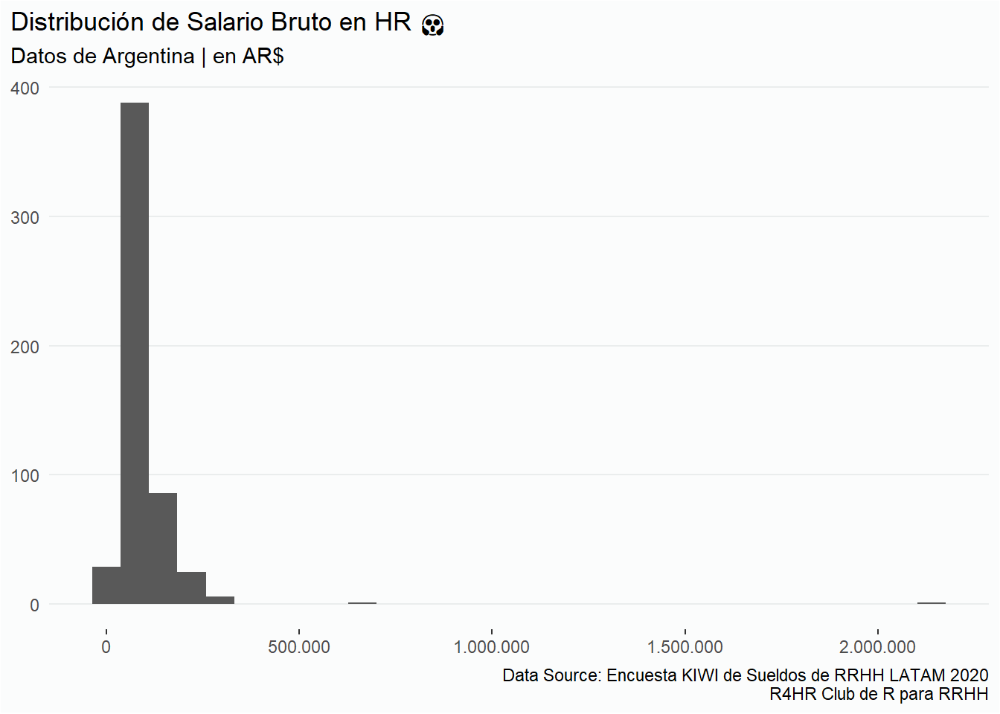
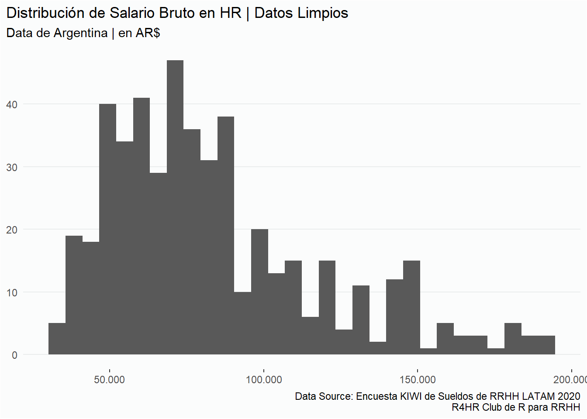
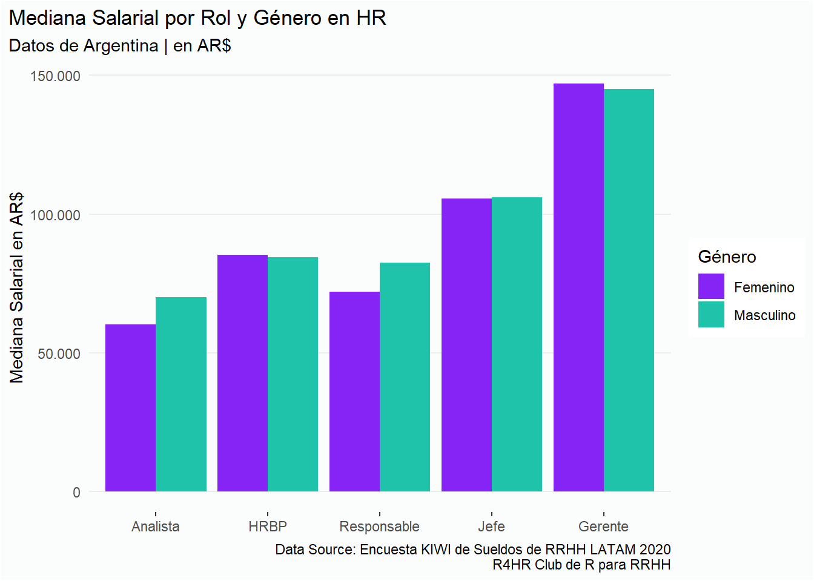
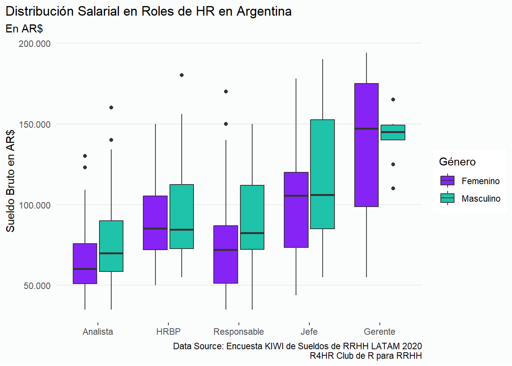
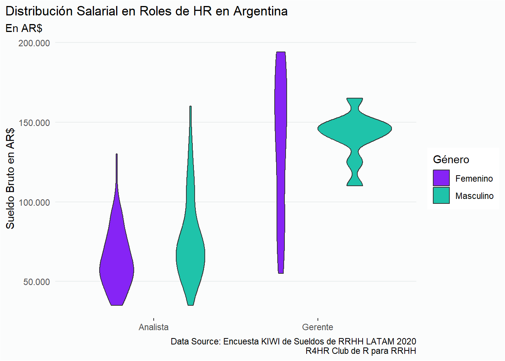
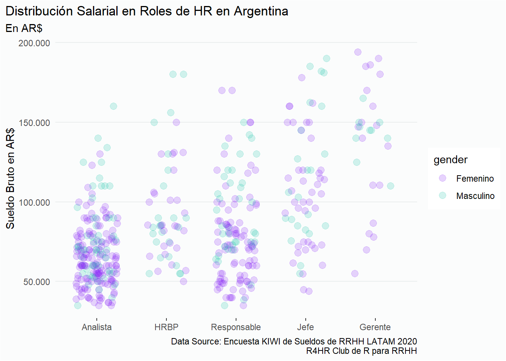
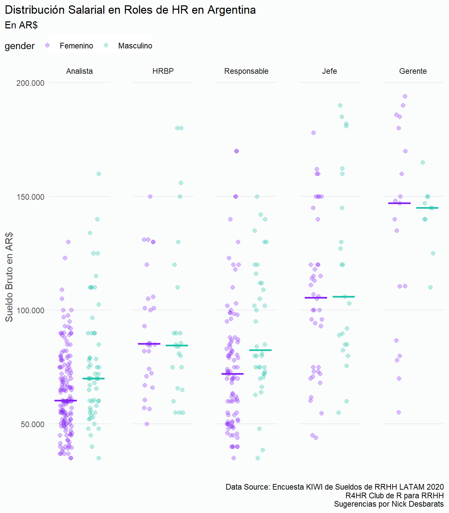

Lo que pasó fue que en R4HR habíamos hecho un boxplot que nos resultó muy útil para evidenciar las desigualdades salariales entre hombres y mujeres, entonces me convertí en un paladín de los boxplots. Bueno, estoy exagerando, pero la realidad es que no existen gráficos mejores o peores que otros, sino gráficos que sirven a un propósito.
En fin, hace poco tuve un intercambio con Nick, y entonces pensé que sería una buena idea reflotar ese artículo en castellano para mi comunidad. Así que aquí lo tienen, un nuevo autoplagio 😎.
Comparando visualizaciones
Este posteo está inspirado en un debate en LinkedIn comparando las bondades y desventajas de los boxplots vs. los scatter plots (o gráficos de dispersión). El posteo fue escrito por Paul van der Laken, PhD citando un artículo de Nick Desbarats titulado “I’ve stopped using boxplots. Should you?”, un artículo inspirador que puedes leer aquí (en inglés).
No quiero demostrar que Nick y Paul están equivocados, ese no es el objetivo de esta publicación. De hecho, me encantó el artículo de Nick. Durante la discusión en los comentarios, compartí un ejemplo donde un boxplot fue útil y me pidieron que hiciera un violin plot. Por eso estoy escribiendo este post.
Cabe mencionar que no me considero un experto en visualización de datos, sólo soy un entusiasta practicante de People Analytics, y de vez en cuando, está bueno participar en un debate donde se puedan cuestionar ideas.
Aunque estoy de acuerdo con la idea general del artículo de Nick de que lo más simple es mejor, y que siempre hay que pensar primero en la audiencia y si van a entender o no un gráfico, en mi opinión no existe un tipo de gráfico mejor que otro. Un gráfico debe usarse con un propósito.
Otro punto en contra de los boxplots es que son complejos de entender y requieren que la audiencia tenga conocimientos estadísticos para interpretarlos, lo cual es cierto. Considerando que trabajo principalmente con profesionales de Recursos Humanos, y que la estadística no es nuestro fuerte, y dado que los boxplots condensan mucha información estadística, la mayoría de mi audiencia no los entendería. Entonces, ¿para qué molestarse?
Una explicación de toda la información que proporciona un boxplot (valores atípicos, cuartiles 1 y 3, mediana)
En mi opinión, incluso si estás haciendo un gráfico de torta o un gráfico de barras, siempre tenés que explicar qué está diciendo la visualización, especialmente si estás usando algún tipo de gráfico con el que la gente no está familiarizada. No asumas que tu audiencia va a interpretar el gráfico de la misma manera en que vos lo pensaste al crearlo. Prestá atención a las charlas TED de Hans Rosling y como siempre explica cómo interpretar sus visualizaciones.
No asumas que el usuario sabrá cómo leer el gráfico
Aunque los boxplots son difíciles de entender, especialmente para los profesionales de Recursos Humanos, creo que pueden ser útiles para personas que trabajan, por ejemplo, en Compensaciones y Beneficios, ya que constantemente manejan medianas y bandas salariales.
Y creo que cada gráfico cumple un propósito. Por ejemplo, en presentaciones comerciales, siempre incluiría un gráfico Sankey por el Efecto Wow, pero casi nunca lo usé en producción porque mis clientes no sabrían cómo leerlos. Entonces, mi punto es que siempre tenés que usar una visualización que el usuario y la audiencia puedan entender.
Así que, considerando todo esto, ¡carguemos algunos datos y comparemos gráficos! 🤓
Los datos
Los datos que vamos a ver son de una encuesta salarial abierta desarrollada por un RUG (Grupo de Usuarios de R) latinoamericano llamado R4HR Club de R para RRHH, una comunidad para aprender a usar R dirigida a personas de habla hispana que trabajan o quieren trabajar en Recursos Humanos. Podés encontrar los datos originales y nuestro análisis completo en este enlace (está en español 🤷🏻).
Primero, carguemos algunas librerías y un subconjunto de los datos. Si no querés ver todo el proceso de preparación de datos, simplemente andá a Comparando visualizaciones en el menú de la izquierda.
Preparación de datos
Estoy cargando datos desde la fuente original. Por eso, esto requiere algo de limpieza de datos. Los datos están filtrados para mostrar solo los resultados de Argentina, y realicé algunos cálculos para estimar los salarios de medio tiempo como equivalentes a un salario de tiempo completo. Esos son los datos que voy a usar para hacer las visualizaciones. Podés descargar una versión limpia de estos datos desde este repositorio de GitHub.
Ver código
# Librarias & Data ----library(tidyverse) # Limpieza y Manipulación de Datoslibrary(funModeling) # Exploración y limpieza de datos y mucho máslibrary(scales) # Ajustes a cómo ver las escalas de los ejeslibrary(googlesheets4) # Leer archivos de Google Sheetslibrary(gargle) # Para lidiar con los caracteres especiales del castellano# Datasalaries <-read_sheet("1aeuu9dVfN42EjyvbmhEcsf0ilSz2DiXU-0MpnF896ss") %>%select(gender ="Género",role ="¿En qué puesto trabajás?",gross_salary ="¿Cuál es tu remuneración BRUTA MENSUAL en tu moneda local? (antes de impuestos y deducciones)",country ="País en el que trabajas",work_type ="Trabajo",work_hours ="Tipo de contratación") %>%filter(country =="Argentina", work_type =="Relación de Dependencia", gender %in%c("Femenino", "Masculino")) %>%select(-country, -work_type)## Limpieza de datos (no hay escapatoria de esto) ----salaries <- salaries %>%mutate(gross_salary =as.numeric(unlist(gross_salary)))# Añade columna para estimar el salario full time de trabajadores part timesalaries <- salaries %>%mutate(multiplier =if_else(work_hours =="Part time", 1.5, 1),ft_salary = gross_salary * multiplier) %>%select(-work_hours, -multiplier, -gross_salary)# Filtro y unificación de roles salaries <- salaries %>%filter(role !="Juzgado Civil y Comercial", role !="Programador", role !="Cuidado", role !="Asesor", role !="Jefe de Proyecto") %>%mutate(role =str_trim(role, side ="both"), # Elimina espacios vacíosrole =fct_collapse(role, "Gerente"="Superintendente"),role =fct_collapse(role, "Director"="Director ( escalafón municipal)"),role =fct_collapse(role, "HRBP"=c("Senior Consultoría", "specialist", "especialista","Especialista en selección IT", "Recruiter")),role =fct_collapse(role, "Responsable"=c("Coordinación", "Coordinador de Payroll","Encargado", "Supervisor")),role =fct_collapse(role, "Administrativo"=c("Asistente", "Asistente RRHH", "Aux", "Capacitador", "Consultor Ejecutivo","consultor jr")),role =fct_collapse(role, "Analista"=c("Asesoramiento", "Consultor", "Generalista", "Reclutadora", "Selectora", "Senior"))) # Filtra roles para analizarsalaries <- salaries %>%filter(role %in%c("Analista", "HRBP", "Responsable","Jefe", "Gerente"))# Graba el dataframe en un csv para compartir.write_delim(salaries, file ="hr_salaries_arg.csv",delim =";")
La siguiente sección es para customizar los gráficos.
Ver código
options(scipen =999) # Cambia la notación científica por valores nominales# Estilo limpio con líneas horizontales grisesstyleh <-theme(panel.grid =element_blank(),plot.background =element_rect(fill ="#FBFCFC"),panel.background =element_blank(),panel.grid.major.y =element_line(color ="#EAEDED"),axis.ticks.y =element_blank(),plot.title.position ="plot")# Estilo limpio con líneas verticales grisesstylev <-theme(panel.grid =element_blank(),plot.background =element_rect(fill ="#FBFCFC"),panel.background =element_blank(),panel.grid.major.x =element_line(color ="#EAEDED"),axis.ticks.x =element_blank(),plot.title.position ="plot")# Modifica la forma en que se muestran los ejesaxis_x_n <-scale_x_continuous(labels =comma_format(big.mark =".", decimal.mark =","))axis_y_n <-scale_y_continuous(labels =comma_format(big.mark =".", decimal.mark =","))# Coloresgender_colors <- genero <-c("#8624F5", "#1FC3AA") # Purple and green (sort of :p)# Fuente de datosfuente <-"Data Source: Encuesta KIWI de Sueldos de RRHH LATAM 2020\nR4HR Club de R para RRHH"
Veamos un resumen de los datos.
Ver código
# Ordena los puestos por jerarquíasalaries <- salaries %>%mutate(role =fct_relevel(role, c("Analista", "HRBP", "Responsable","Jefe", "Gerente"))) # Veamos un resumen de los datossummary(salaries)
gender role ft_salary
Length:536 Analista :223 Min. : 2
Class :character Responsable :136 1st Qu.: 56000
Mode :character Jefe : 72 Median : 75000
HRBP : 57 Mean : 93288
Gerente : 48 3rd Qu.: 105250
Administrativo: 0 Max. :2140000
(Other) : 0
Hay un par de valores inusuales. Primero, el valor mínimo, que claramente es un error (o alguien con malas intenciones), y luego el valor máximo, que podría ser posible, pero es altamente inusual para el mercado argentino. Si hacemos un histograma, el resultado sería extraño.
Ver código
ggplot(salaries, aes(x = ft_salary)) +geom_histogram() +labs(title =paste0("Distribución de Salario Bruto en HR ", emo::ji("scream")),subtitle ="Datos de Argentina | en AR$",x =NULL, y =NULL,caption = fuente) + axis_x_n + styleh

Acá es donde funModeling hace su magia. La función profiling_num arroja una tabla con un montón de información estadística de resumen.
Dado que quiero analizar los valores centrales de los salarios, voy a eliminar todos los valores por fuera de los percentiles 5 y 95.
Ver código
# Guarda los valores de los percentiles 5 y 95 de la tabla numericalp05 <- numerical[1,6]p95 <- numerical[1,10]# Filtra valores dentro del rango de los percentiles p05 y p95salaries <- salaries %>%filter(between( # Función de soporte ft_salary, # Variable a filtrar p05, # Umbral mínimo p95 # Umbral máximo ))# Elimino objetos que no voy a volver a usarrm(numerical, p05, p95)
Ahora que tenemos una versión más limpia de los datos podemos empezar a comparar las visualizaciones.
Ver código
ggplot(salaries, aes(x = ft_salary)) +geom_histogram() +labs(title ="Distribución de Salario Bruto en HR | Datos Limpios",subtitle ="Data de Argentina | en AR$",x =NULL, y =NULL,caption = fuente) + axis_x_n + styleh

Comparando gráficos
Créditos: Allison Horst @allison_horst
¿Por qué usar un boxplot en lugar de un simple gráfico de barras? Probemos usando un gráfico de barras para comparar el salario mediano de hombres y mujeres en cada rol:
Ver código
salaries %>%group_by(role, gender) %>%summarise(median_salary =median(ft_salary)) %>%ggplot(aes(x = role, y = median_salary, fill = gender)) +geom_col(position ="dodge") +scale_fill_manual(values = gender_colors) + axis_y_n + styleh +labs(title ="Mediana Salarial por Rol y Género en HR",subtitle ="Datos de Argentina | en AR$",y ="Mediana Salarial en AR$",x =NULL,fill ="Género",caption = fuente)

Si miramos cada barra, podemos ver que la brecha salarial para los roles de Analista y Supervisor es mayor que en los otros roles, lo que indica que los hombres en Recursos Humanos ganan más que sus colegas mujeres. Pero cuando observamos los roles de HRBP y Gerentes, la mediana salarial de las mujeres es ligeramente mayor que la de los hombres, e incluso en el rol de Jefatura, la brecha es bastante pequeña. Con esta evidencia, podríamos decir que la brecha salarial de género en Recursos Humanos en Argentina no es un problema, pero…
Boxplots
En el debate en LinkedIn, Nick Desbarats dice que tiene problemas para encontrar casos de uso donde los boxplots fueran la mejor opción, así que compartí el siguiente gráfico:
Ver código
ggplot(salaries, aes(x = role, y = ft_salary, fill = gender)) +geom_boxplot() +scale_fill_manual(values = gender_colors) + axis_y_n + styleh +labs(title ="Distribución Salarial en Roles de HR en Argentina",subtitle ="En AR$",y ="Sueldo Bruto en AR$",x =NULL,fill ="Género",caption = fuente)

Lo que me gusta de este gráfico es que podemos ver la distribución de los salarios por el tamaño de cada mitad de las cajas. Usemos de ejemplo la posición de Jefe. Las medianas entre hombres y mujeres son similares, pero en el caso de las mujeres la mitad inferior es más grande que la de los varones, indicando que el rango de salarios de las mujeres es más amplio. Eso nos dice que hay mujeres en la posición de Jefe con sueldos muy por debajo de la mediana.
Lo opuesto ocurre con profesionales masculinos en el puesto de Jefe. La mitad superior de la caja es más amplia, indicando que hay hombres con sueldos muy por encima de la mediana.
Nick tiene un punto a su favor. ¿Cuántos casos tenemos en cada rol? ¿3, 15, 300? No lo podemos saber con este tipo de gráfico. Entonces él sugirió probar con un gráfico deviolín. Así que, veamos qué ocurre.
Violin plot
Los gráficos de violín son una alternativa a los boxplots. Muestran el rango de valores con su largo, y las distintas concentraciones de datos con su ancho. La sección más ancha del gráfico suele indicar la mediana de los valores numéricos.:
[
Convirtamos nuestro boxplot original en un gráfico de violín.
Ver código
ggplot(salaries, aes(x = role, y = ft_salary, fill = gender)) +geom_violin() +scale_fill_manual(values = gender_colors) + axis_y_n + styleh +labs(title ="Distribución Salarial en Roles de HR en Argentina",subtitle ="En AR$",y ="Sueldo Bruto en AR$",x =NULL,fill ="Género",caption = fuente)
Dada la cantidad de roles, no podemos apreciar el valor de este tipo de gráfico. Así que repitamos el ejercicio pero sólo con los Analistas y Gerentes
Ver código
salaries %>%filter(role %in%c("Analista", "Gerente")) %>%ggplot(aes(x = role, y = ft_salary, fill = gender)) +geom_violin() +scale_fill_manual(values = gender_colors) + axis_y_n + styleh +labs(title ="Distribución Salarial en Roles de HR en Argentina",subtitle ="En AR$",y ="Sueldo Bruto en AR$",x =NULL,fill ="Género",caption = fuente)

El ancho de cada gráfico indica que esa zona contiene mayor cantidad de casos. Para Gerentes hombres, podemos apreciar que la mayoría de los casos están cerca de la mediana. El largo o altura del gráfico indica el rango de valores. Para el caso de las Gerentas ese rango va desde aproximadamente AR$ 50.000 hasta cerca de los AR$ 200.000 y el ancho es bastante parejo a lo largo de las observaciones.
En el caso de los analistas, en las mujeres vemos que la sección más ancha se encuentra en torno a los AR$ 50.000 y se hace más delgada hacia arriba. En el caso de los varones, la parte más ancha del gráfico está más arriba que el de las mujeres, y el rango se expande hasta valores más altos.
Tal vez para este dataset, el gráfico de violín no sea la mejor opción para ver todos los roles juntos, así que probemos el gráfico de dispersión o scatter plot.
Scatter plot
Una manera de ver la distribución de los puntos de datos es mediante el scatter plot o gráficos de dispersión. Tendemos a usarlos para visualizar las relaciones entre dos variables numéricas, pero también podemos utilizarlos cuando tenemos una variable nominal.
Ver código
ggplot(salaries, aes(x = role, y = ft_salary, color = gender)) +geom_point(size =3,alpha =0.2,position =position_jitter(0.3)) +scale_color_manual(values = gender_colors) + styleh + axis_y_n +labs(title ="Distribución Salarial en Roles de HR en Argentina",subtitle ="En AR$",y ="Sueldo Bruto en AR$",x =NULL,fill ="Género",caption = fuente)

Nuevamente, con este dataset el scatter plot puede ser más confuso dado que en ciertos roles, como el de Analista o el Responsable tienen muchas observaciones, se dificulta apreciar las diferencias por color. Pero por ejemeplo, en el caso de los Gerentes se puede apreciar el rango de los salarios y dónde se concentran en el caso de los varones.
Probemos separar los gráficos en gráficos más chicos para ver si ayuda a clarificar la interpretación de los datos.
Ver código
# Calcular mediana de los salarios por género y rol median_salaries <- salaries %>%group_by(gender, role) %>%summarise(median_salary =median(ft_salary, na.rm =TRUE), .groups ="drop")median_salaries <- median_salaries %>%mutate(x =as.numeric(as.factor(gender)) -0.4, # Ajusta el inicio de la líneaxend =as.numeric(as.factor(gender)) +0.4) # Ajusta el final de la línea# Gráfico## Scatter plotggplot(salaries, aes(x = gender, y = ft_salary, color = gender)) +geom_point(size =2,alpha =0.3,position =position_jitter(0.22)) +## Customiza coloresscale_color_manual(values = gender_colors) +## Añade líneas de medianasgeom_segment(data = median_salaries, aes(x = x, xend = xend, y = median_salary, yend = median_salary, color = gender), size =1,show.legend =FALSE) +## Customiza el estilo del gráfico styleh +## Customiza las etiquetas del eje y axis_y_n +## Modifica títulos y ejeslabs(title ="Distribución Salarial en Roles de HR en Argentina",subtitle ="En AR$",y ="Sueldo Bruto en AR$",x =NULL,fill ="Género",caption =paste0(fuente,"\nSugerencias por Nick Desbarats")) +## Divide el gráfico en subgráficos por rolfacet_wrap(~role, nrow =1) +# Modificaciones estéticas adicionales al gráfico sugeridas por Nick Desbaratstheme(axis.title.y =element_text(color ="grey30", family ="Poppins"),axis.text.x =element_blank(),legend.position ="top", # Mueve la leyenda arriba del gráficolegend.justification ="left", # Centra la leyenda horizontalmentelegend.box.just ="left", # Alinea el contenido de la caja de la leyenda legend.margin =margin(l =-50, t =3),panel.spacing =unit(25, "pt"),strip.background =element_blank(),stripp.text.x =element_text(face ="bold"),axis.ticks.x =element_blank())

Ver código
# Guarda el gráfico en un archivo pngggsave("jittered_strip.png", dpi =300)
Ahora podemos apreciar de mejor manera todas las posiciones de los puntos de datos, donde los datos están más concentrados y también los diferentes rangos de los salarios tanto para hombres como para mujeres en los diferentes roles. Por lo tanto, es más fácil comparar y analizar los resultados y ver el número de observaciones.
Dado que estoy diseñando todas estas visualizaciones, podría estar sesgado, pero en mi opinión, al ver todos los roles juntos en una visualización, la carga cognitiva aumenta para interpretar la situación salarial tanto para el género como para todos los roles a la vez.
Conclusiones
Mi percepción de los gráficos está sesgada por mi experiencia y por haber creado el boxplot original. Para este conjunto de datos específico, un gráfico más simple de interpretar, como el último diagrama de dispersión, podría ser más difícil de extraer conclusiones. Reconozco que los gráficos de violín son más sofisticadas desde el punto de vista del diseño, y proporcionan un efecto wow que te hace reaccionar “Wow, esto se ve genial” pero terminan sin tener ni idea de cómo interpretar lo que estás viendo.
Creo que es Alberto Cairo quien dice que la visualización es una herramienta para representar una realidad compleja con una codificación visual. Por lo tanto, cada visualización tendrá algunos altibajos (simplicidad para los gráficos de barras, mucha información para los boxplots) y desventajas (simplificación excesiva y ocultación de la realidad para los gráficos de barras; demasiada información y “ocultación” de la cantidad de puntos de datos para los boxplots), por lo que tenemos que tomar decisiones conscientes cuando usamos visualizaciones para comunicar resultados:
Cuál es la mejor visualización que representa la historia de los datos.
¿Cuál es mi propósito? ¿Sorprender y asombrar? ¿Para educar? ¿Cuánto tiempo tengo para explicar la visualización?
Considere cuánto sabe la audiencia sobre los datos, una visualización, y cuánto realmente quiere mejorar sus capacidades.
¿Necesitamos una visualización sencilla que todo el mundo entienda, o deberíamos utilizar una visualización más compleja para expertos en la materia?
Para este ejemplo en particular, y para este conjunto de datos específico, y si desea mostrar los resultados de todos los roles en un gráfico, el diagrama de caja es la mejor opción, porque, incluso con su complejidad, condensa suficiente información para sacar conclusiones y comprender la historia detrás de los datos. Creo que para este caso en particular, su forma consistente a lo largo de los roles y géneros reduce la carga cognitiva y ayuda al usuario a comparar resultados una vez que entiende cómo interpretar el gráfico.
De todos modos, no des por sentada mi palabra. Como dije antes, no soy un experto en visualización, sino un entusiasta practicante de People Analytics. Así que podés estar de acuerdo conmigo, o no, está bien. Espero que esta publicación te ayude a considerar nuevos ángulos la próxima vez que necesites usar visualizaciones para comunicar resultados. Idealmente, debería haber hecho este ejercicio con diferentes conjuntos de datos, pero… ¿quién tiene tiempo?
Supongo que eso refuerza mi afirmación inicial. No hay un gráfico que sea mejor que otros per se, sino que hay gráficos que funcionan mejor en situaciones concretas, para un público concreto, con una finalidad concreta y en función de los datos que se tengan.
Si querés ponerte en contacto conmigo, escribime a través de mi perfil en LinkedIn profile, en Blue Sky, por Telegram o simplemente escribime un email a sergio.garciamora@gmail.com.com. Podés acceder al repo original en GitHub para reproducir los resultados. Seguí a Nightingaledvs.com para ver contenido genial sobre visualización de datos. Fue muy interesante recorrer su contenido
gargle: Jennifer Bryan, Craig Citro and Hadley Wickham (2021). gargle: Utilities for Working with Google APIs. R package version 1.2.0. https://CRAN.R-project.org/package=gargle
emo: Hadley Wickham, Romain François and Lucy D’Agostino McGowan (2021). emo: Easily Insert ‘Emoji’. R package version 0.0.0.9000. https://github.com/hadley/emo